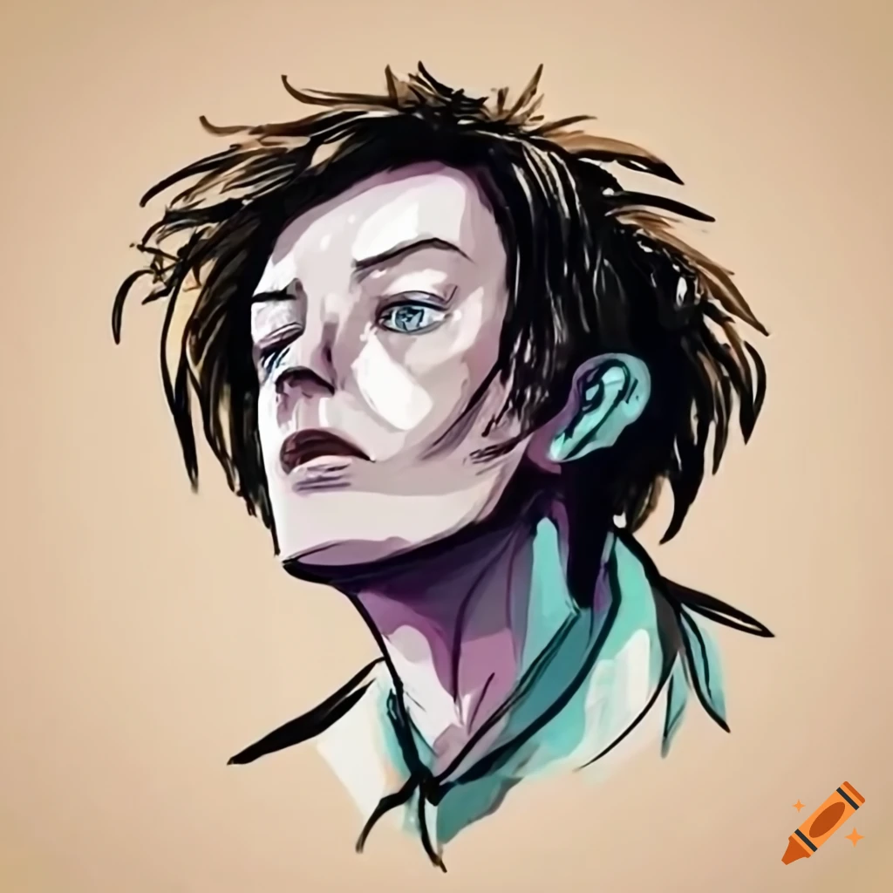

No Longer Human Image Gallery
by Yann Arif
This is my final project for LJ251. It focuses on No Longer Human,
A book by Osamu Dazai. I've chosen to do a short image gallery of AI generated images (get it, No Longer Human?) using a couple of
important lines and quotes from the book, to see what a machine could make of it. after each one, I will add a little comment of my own
to briefly analyze it. Enjoy!
 I tried many times to get a generated picture that fit the description of the first prologue image, but none of them were accurate enough to satisfy me, instead, I did some digging and learned that the description of the picture was
inspired by an image from Dazai's childhood, pictured here, with Dazai himself pointed out by the arrow. It's interesting to note how
Dazai talks about the child in the story as "You see that it is actually not a smiling face at all. The boy has not a suggestion of a smile. Look at his tightly clenched fists if you want proof."
Although in this photograph, Dazai doesn't have very tightly clenched fists the way it's described, there is certainly a hint of discomfort and forced happiness in his face, which lines up with the description of the novel as
semi-autobiographical.
I tried many times to get a generated picture that fit the description of the first prologue image, but none of them were accurate enough to satisfy me, instead, I did some digging and learned that the description of the picture was
inspired by an image from Dazai's childhood, pictured here, with Dazai himself pointed out by the arrow. It's interesting to note how
Dazai talks about the child in the story as "You see that it is actually not a smiling face at all. The boy has not a suggestion of a smile. Look at his tightly clenched fists if you want proof."
Although in this photograph, Dazai doesn't have very tightly clenched fists the way it's described, there is certainly a hint of discomfort and forced happiness in his face, which lines up with the description of the novel as
semi-autobiographical.
 Although the child in this picture is a little younger than I had originally imagined, I think it accurately captures the
emotionless stare that was described in the second photograph of the prologue (but I'd imagine Dazai's original intention was for the man to be making eye contact with the camera).
While most elements of the description were properly implemented, the "fake smile" is missing to give the characteristic eeriness to this picture.
Although the child in this picture is a little younger than I had originally imagined, I think it accurately captures the
emotionless stare that was described in the second photograph of the prologue (but I'd imagine Dazai's original intention was for the man to be making eye contact with the camera).
While most elements of the description were properly implemented, the "fake smile" is missing to give the characteristic eeriness to this picture.
 For the description of the third and last prologue image, every result I recieved usually had an elderly man similar to the one in this image, despite the description clearly mentioning that the man's age was indiscernable.
I then tried to remove any words that may age the appearance of the product, but nothing changed. At this point it seems clear that Dazai's description of people relies more on the emotion that the subject conveys, which does not
go well with an AI image generator. Other than that, the hands that are mentioned are also missing, and I don't think that an AI has the ability to create a face that is "genuinely chilling" in the way Dazai invisioned.
For the description of the third and last prologue image, every result I recieved usually had an elderly man similar to the one in this image, despite the description clearly mentioning that the man's age was indiscernable.
I then tried to remove any words that may age the appearance of the product, but nothing changed. At this point it seems clear that Dazai's description of people relies more on the emotion that the subject conveys, which does not
go well with an AI image generator. Other than that, the hands that are mentioned are also missing, and I don't think that an AI has the ability to create a face that is "genuinely chilling" in the way Dazai invisioned.
 Now, I can start using this tool to try to visualize abstract quotes and concepts. Here, I've decided to see what could be made of the quote by Yozo:
Now, I can start using this tool to try to visualize abstract quotes and concepts. Here, I've decided to see what could be made of the quote by Yozo:
"The weak fear happiness itself. They can harm themselves on cotton wool. Sometimes they are wounded even by happiness"
I love how this piece came out. From the lack of detail on the person depicting a sort of anonymous abiguity, to the hair and clothes resembling cotton and soft clothes while the person is clearly distressed, I
think this piece nicely depicts how a weak person, no matter how much comfort or happiness they are surrounded by, will find a reason to be unhappy about it.

Once again, I've inputted this quote from Yozo:
“Mine has been a life of much shame. I can’t even guess myself what it must be to live the life of a human being.”
I have to say, This may be the first product that feels alive. I look at this image and feel like there is truly emotion in the person, and strangely enough, I feel like I'm looking at Doctor Frankenstein here. This is interesting because it's another story
that talks about the humanity of an individual and fitting in. I also like how the ear and neck of this person fades into blue, as if their humanity is physically fading away. The eyes being only half open give me the impression that this drawing is a
depiction of Yozo's face as he is thinking about the quote. It's as if he is thinking over his life and what has happened, and realizing that his story is not normal.
Final words
Overall, I found that the AI was ironically not great and making an image out of a description of an image, but rather I was much more impressed by the results of concepts and quotes. If I had to do this project again, I'd like to try to do more images based on quotes from the book,
and I'd like to use a paid AI such as OpenAI's DALL-E 2, which is trained on a better and bigger set of data, creating clearer images that can accept longer imputs without dropping details.
This website belongs to Yann Arif, and all art was procured by craiyon.com